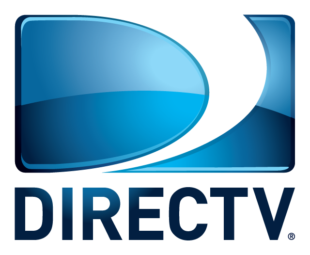
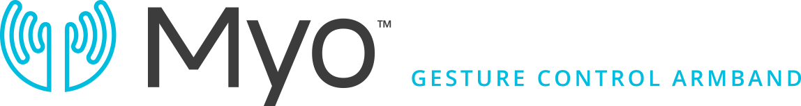

Have you imagined controlling your DirectTV box using hand gestures?
That is MyoTV. Using your iPhone and the Myo Armband you'll be able to control your DirectTV box using only hand motions. Everything from navigating the program guide, flip channels and fast-forward/rewind programs.See the Demo
Video: MyoTV @HackMIT'14


Technologies Used
DIRECTV's set-top box APIs
Set-Top Box Control Overview With DirecTV's set-top box APIs, you can directly control our set-top boxes over the local network. From within the home, your app can change the channel on the set-top box and send remote-control commands. Synchronize the second-screen by detecting the currently viewed program and the time elapsed within the show.
Myo armband iOS SDK set-top box APIs
Use the Thalmic Lab's Myo SDK to capture arm movements and gestures inside of your application. Sound like magic? Your users will think so too. Head over to the Developer Portal to get everything you need to turn your gesture control ideas into reality.
Hackers
- Christian Rodriguez - University of Puerto Rico, Río Piedras
- Xiomara Figueroa - University of Puerto Rico, Río Piedras
- Abimael Carrasquillo - University of Puerto Rico, Río Piedras
Some of the icons used in this app were obtained from the internet.
- Five Finger Wave left and right by Jeff Portaro from The Noun Project
- Smart TV by Richard Saunders - Twitter